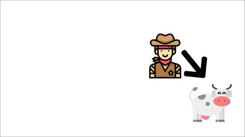
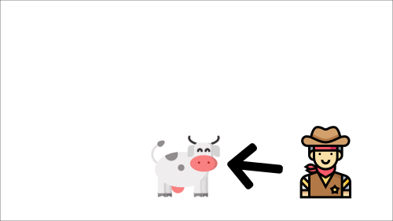

Deep Q-Learning#
Note
Q-Learning is a tabular method. This becomes a problem if the states and actions spaces are not small enough to be represented efficiently by arrays and tables.
If the state space is gigantic, the best idea is to approximate the Q-values using a parametrized Q-function \(Q_{\theta}(s, a)\).
Deep Q-Learning uses a neural network that takes a state and outputs one approximate Q-Value for each possible action.

The Deep Q-Learning Algorithm#
Instead of updating the Q-value of a state-action pair directly as we have done with Q-Learning. In Deep Q-Learning, we create a loss function that compares our Q-value prediction and the Q-target and uses gradient descent to update the weights of our Deep Q-Network to approximate our Q-values better.
Algorithm 1 (Deep Q-Learning)
Initialize replay memory \(\mathcal{D}\) to capacity \(N\)
Initialize action-value function \(Q\) with random weights \(\theta\)
Initialize target action-value function with weights \(\theta^{-}=\theta\)
for episode \(= 1, M\) do
\(\quad\)Initialise state \(s_1\)
\(\quad\)for \(t= 1, T\) do
\(\quad\)\(\quad\)With probability \(\epsilon\) select a random action \(a_{t}\) otherwise select \(a_{t} = \arg\max_{a}Q(s_t, a; \theta^{-})\)
\(\quad\)\(\quad\)Execute action \(a_{t}\) in emulator and observe reward \(r_{t+1}\) and new state \(s_{t+1}\)
\(\quad\)\(\quad\)Store transition \((s_{t},a_{t},r_{t+1},s_{t+1})\) in \(\mathcal{D}\)
\(\quad\)\(\quad\)Sample random minibatch of transitions \((s_{i},a_{i},r_{i+1},s_{i+1})\) from \(\mathcal{D}\)
\(\quad\)\(\quad\)\(y_{i} = r_{i+1} + \gamma \max_{a}Q(s_{i+1},a; \theta^{-})\)
\(\quad\)\(\quad\)Perform a gradient descent step on \((y_i − Q(s_{i} , a_{i} ; \theta))^2\) with respect to \(\theta\)
\(\quad\)\(\quad\)Every \(C\) steps reset \(\theta^{-}=\theta\)
\(\quad\)end for
end for
The Deep Q-Learning training algorithm has two phases:
Sampling: we perform actions and store the observed experience tuples in a replay memory.
Training: Select a small batch of tuples randomly and learn from this batch using a gradient descent update step.
Deep Q-Learning training might suffer from instability, mainly because of combining a non-linear Q-value function (Neural Network) and bootstrapping (when we update targets with existing estimates and not an actual complete return). To help us stabilize the training, we implement two different solutions:
Experience Replay to make more efficient use of experiences.
Fixed Q-Target to stabilize the training.
Experience Replay#
Experience Replay in Deep Q-Learning has two functions:
Make more efficient use of the experiences during the training. We use a replay buffer that saves experience samples that we can reuse during the training. This allows the agent to learn from the same experiences multiple times.
Avoid forgetting previous experiences and reduce the correlation between experiences.
The problem we get if we give sequential samples of experiences to our neural network is that it tends to forget the previous experiences as it gets new experiences. The solution is to create a Replay Buffer that stores experience tuples while interacting with the environment and then sample a small batch of tuples.
By randomly sampling the experiences, we remove correlation in the observation sequences and avoid action values from oscillating or diverging catastrophically.
Fixed Q-Target#
When we want to calculate the TD error (aka the loss), we calculate the difference between the TD target (Q-Target) and the current Q-value (estimation of Q).
However, the problem is that we are using the same parameters (weights) for estimating the TD target and the Q-value. Consequently, there is a significant correlation between the TD target and the parameters we are changing.
Therefore, at every step of training, both our Q-values and the target values shift. We’re getting closer to our target, but the target is also moving. It’s like chasing a moving target! This can lead to significant oscillation in training.
It’s like if you were a cowboy (the Q estimation) and you wanted to catch a cow (the Q-target). Your goal is to get closer (reduce the error).

At each time step, you’re trying to approach the cow, which also moves at each time step (because you use the same parameters).


Instead, we:
Use a separate network with fixed parameters for estimating the TD Target
Copy the parameters from our Deep Q-Network every \(C\) steps to update the target network.
Deep Q-Learning Variants#
Let’s look at a few variants of the Deep Q-Learning algorithm that can further stabilize and speed up training.
Double DQN#
Remember how we calculate the TD Target:

We face a simple problem by calculating the TD target: how are we sure that the best action for the next state is the action with the highest Q-value? We know that the accuracy of Q-values depends on what action we tried and what neighboring states we explored.
Consequently, we don’t have enough information about the best action to take at the beginning of the training. Therefore, taking the maximum Q-value (which is noisy) as the best action to take can lead to false positives. If non-optimal actions are regularly given a higher Q value than the optimal best action, the learning will be complicated.
The solution is: when we compute the Q target, we use two networks to decouple the action selection from the target Q-value generation. We:
Use our DQN network to select the best action to take for the next state.
Use our Target network to calculate the target Q-value of taking that action at the next state.